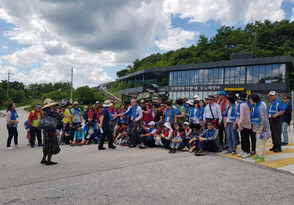

피스메이커 교육
비무장지대(DMZ)는 한반도 분단현실을 인식하고 평화통일의 희망을 배울 수 있는 산교육 체험학습장입니다. 국경선평화학교는 2014년부터 DMZ현장에서 배우는 청소년평화통일교육프로그램을 발전시켜왔습니다. 2020년 부터는 학생들이 직접 참여하면서 느기고 평화 상상력을 키우는 학생(청소년)참여형 평화통일체험교육 프로그램을 시행하고 있습니다.
교육 목표
- 목표
- 시민 남북한 평화통일 희망 회복, 평화의식 증진, DMZ생태계 보전의식 교육
- 방법
- ‘평화순례’ 체험 교육으로 생각하고 배우는 여행이란 의미에서 ‘안보관광’용어 대신 ‘평화순례’란 용어를 쓴다
- 대상
- 일반 시민, 종교인, 학교교사, 공무원, 시민단체 회원 및 실무자
